zone-first v2 - medium lots: the six pairwise-different plans per brief
Ranking is the provisional quality score, lower is better: each metric is measured against the band across the user's own plans; a candidate is different from another when their layout families differ or their same-kind area overlap is below 0.7. The user's layouts never steer generation or ranking. Every zone carries its name and size (metres, 1 dp); Flex is hatched with its class, an extension is hatched the other way and labelled "Zone · extension", flex-walls are hatched with a dashed edge, the spine is dotted - nothing relies on colour.
M-01 - 10.5 x 22.0, 4 bed, double garage 10500 x 22000 mm, 4 bed, double garage
valid 1854/5504 generated · 1476 distinct · 738 mirror images hidden
option 1 (rank 1 of 1476)score 5.89 · Flex share 7% · carved: Theatre, Guest bed, Activity, Study · circulation 5% · Core 25% · bedroom spread 10.3 m · wet near bed yes · laundry near yes · spine 6.0 m · extensions 0.0 m² · flex m²: room 11.2 · circulation 3.6 · storage 1.8 · sliver 0.0 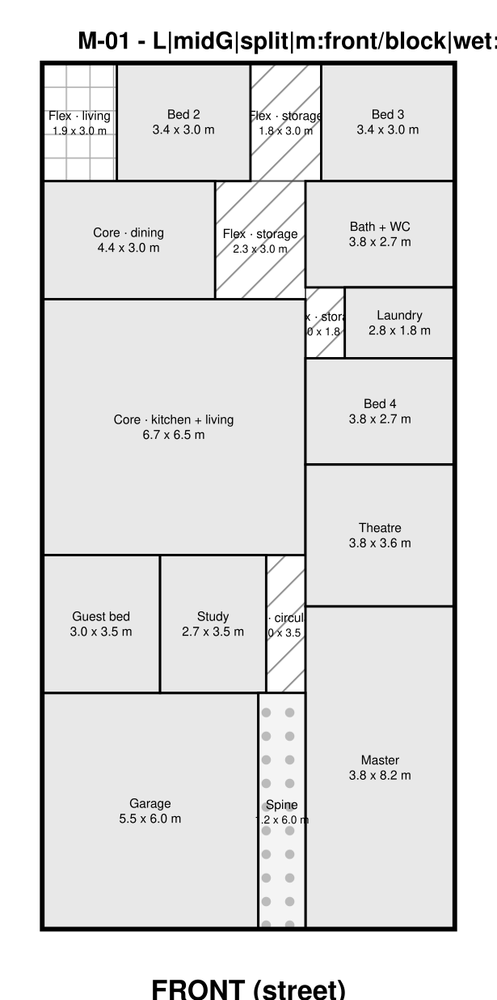
option 2 (rank 3 of 1476)score 5.98 · Flex share 5% · carved: Theatre, Guest bed, Activity, Study · circulation 5% · Core 25% · bedroom spread 11.0 m · wet near bed yes · laundry near yes · spine 6.0 m · extensions 0.0 m² · flex m²: room 0.0 · circulation 3.5 · storage 8.8 · sliver 0.0 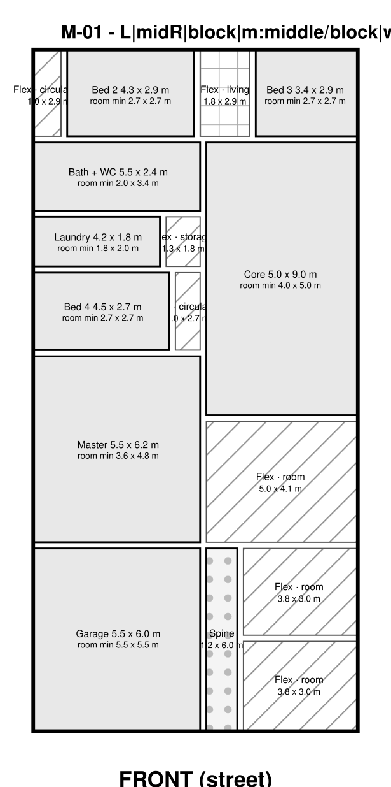
option 3 (rank 29 of 1476)score 6.48 · Flex share 15% · carved: Theatre, Guest bed · circulation 3% · Core 25% · bedroom spread 9.8 m · wet near bed yes · laundry near yes · spine 6.0 m · extensions 0.0 m² · flex m²: room 32.5 · circulation 0.0 · storage 1.8 · sliver 0.0 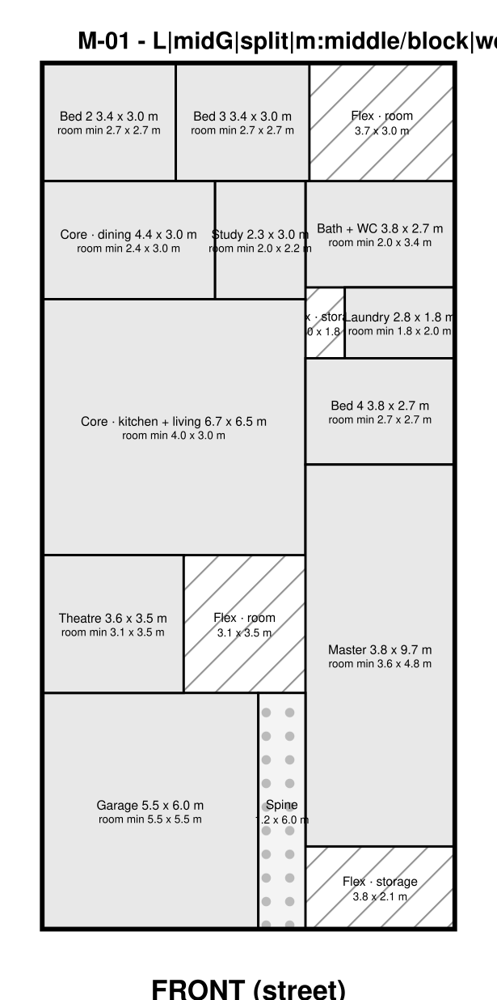
option 4 (rank 67 of 1476)score 7.74 · Flex share 9% · carved: Theatre, Guest bed, Study · circulation 10% · Core 19% · bedroom spread 11.4 m · wet near bed yes · laundry near yes · spine 6.0 m · extensions 0.0 m² · flex m²: room 17.9 · circulation 3.5 · storage 0.0 · sliver 0.0 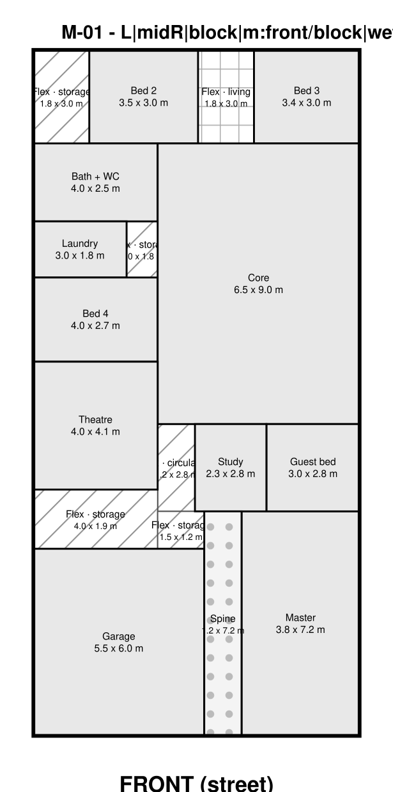
option 5 (rank 131 of 1476)score 9.61 · Flex share 20% · carved: Theatre, Study · circulation 7% · Core 19% · bedroom spread 11.0 m · wet near bed yes · laundry near yes · spine 6.0 m · extensions 0.0 m² · flex m²: room 28.8 · circulation 9.0 · storage 7.8 · sliver 0.0 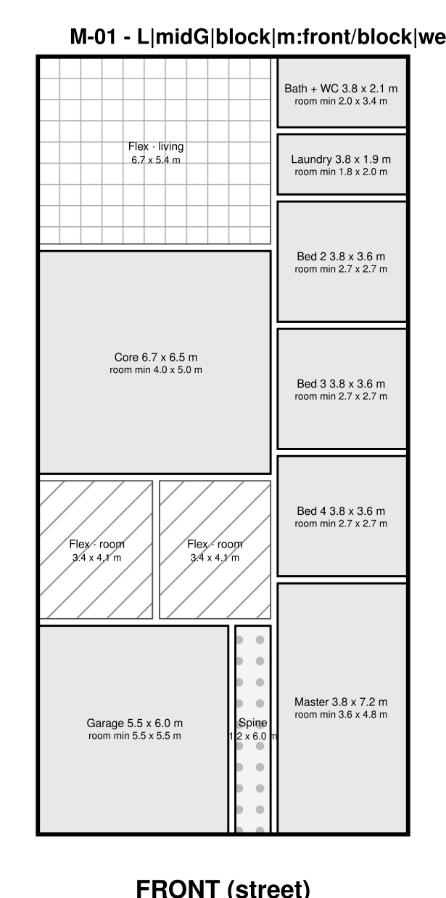
option 6 (rank 163 of 1476)score 13.82 · Flex share 13% · carved: Theatre, Guest bed, Study · circulation 9% · Core 19% · bedroom spread 6.5 m · wet near bed yes · laundry near yes · spine 6.0 m · extensions 0.0 m² · flex m²: room 13.3 · circulation 13.6 · storage 4.0 · sliver 0.0 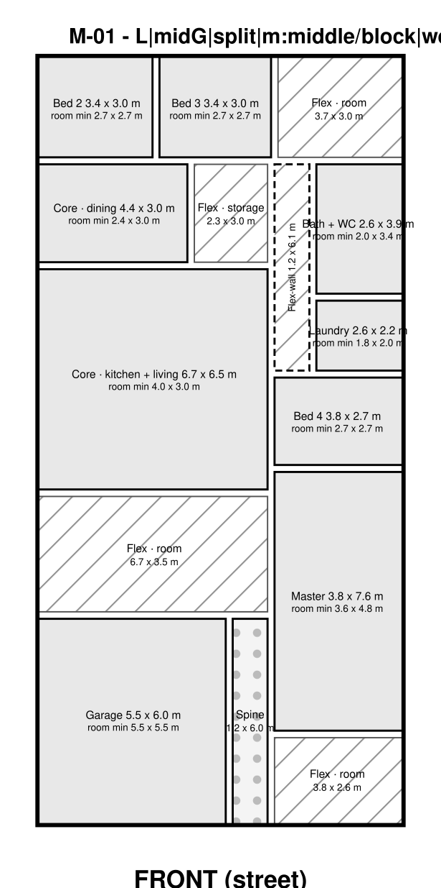
M-02 - 12.5 x 18.0, 3 bed, double garage 12500 x 18000 mm, 3 bed, double garage
valid 2576/5504 generated · 1788 distinct · 894 mirror images hidden
option 1 (rank 1 of 1788)score 12.43 · Flex share 14% · carved: Guest bed, Activity, Study · circulation 3% · Core 25% · bedroom spread 6.2 m · wet near bed yes · laundry near yes · spine 6.0 m · extensions 0.0 m² · flex m²: room 31.5 · circulation 0.0 · storage 0.0 · sliver 0.0 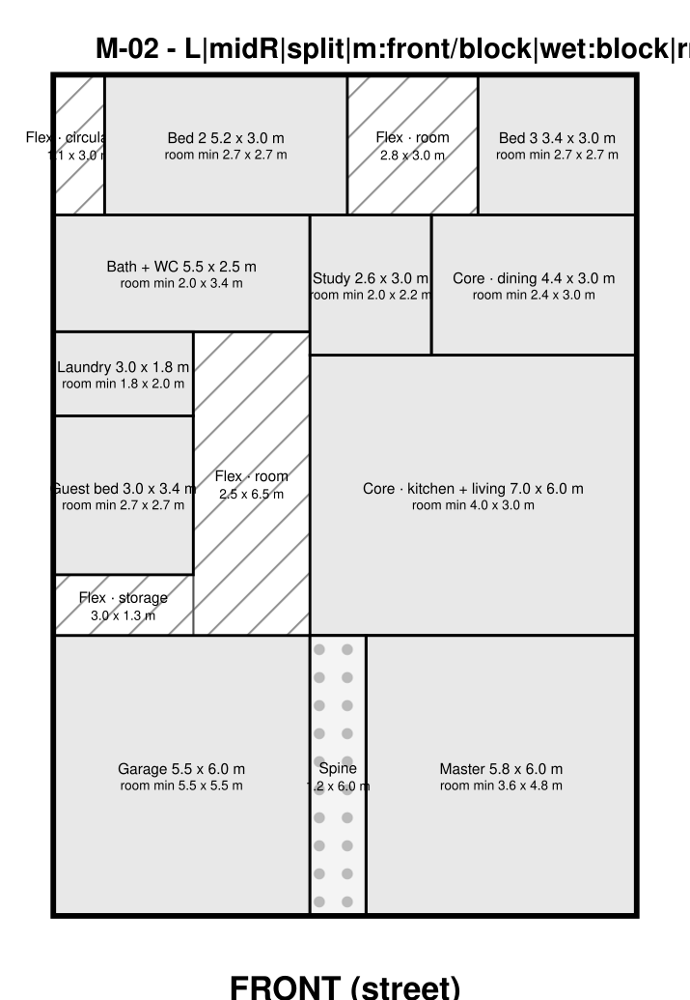
option 2 (rank 3 of 1788)score 16.6 · Flex share 19% · carved: Theatre, Study · circulation 9% · Core 25% · bedroom spread 6.4 m · wet near bed yes · laundry near yes · spine 6.0 m · extensions 0.0 m² · flex m²: room 0.0 · circulation 13.2 · storage 30.4 · sliver 0.0 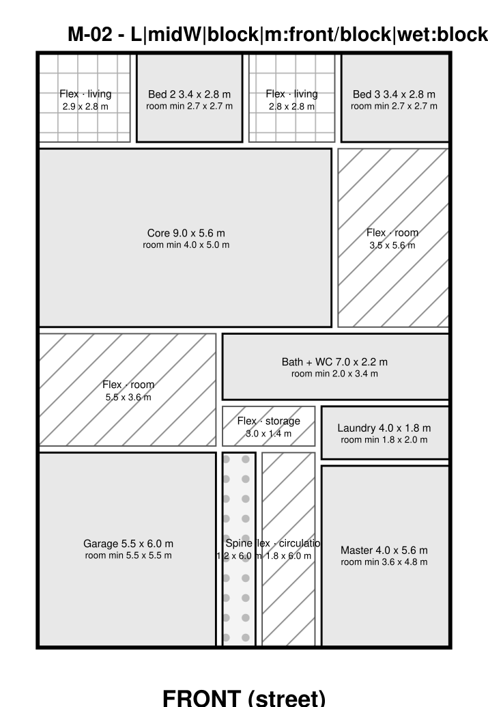
option 3 (rank 11 of 1788)score 17.06 · Flex share 15% · carved: Theatre, Guest bed, Study · circulation 8% · Core 25% · bedroom spread 6.2 m · wet near bed yes · laundry near yes · spine 6.0 m · extensions 0.0 m² · flex m²: room 22.1 · circulation 10.8 · storage 1.8 · sliver 0.0 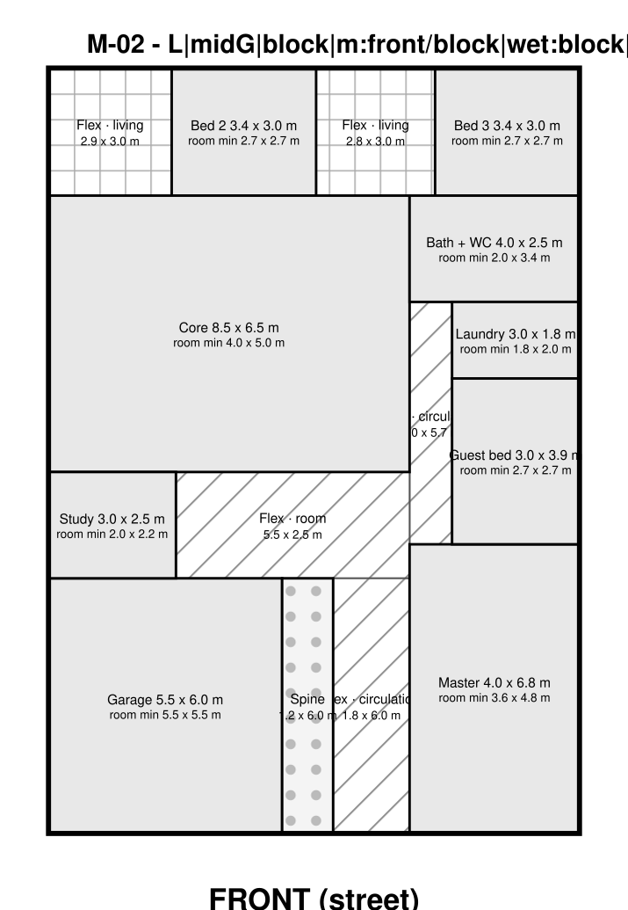
option 4 (rank 33 of 1788)score 21.11 · Flex share 7% · carved: Theatre, Guest bed, Activity · circulation 9% · Core 24% · bedroom spread 6.2 m · wet near bed no · laundry near yes · spine 6.0 m · extensions 15.1 m² · flex m²: room 7.8 · circulation 2.5 · storage 5.7 · sliver 0.0 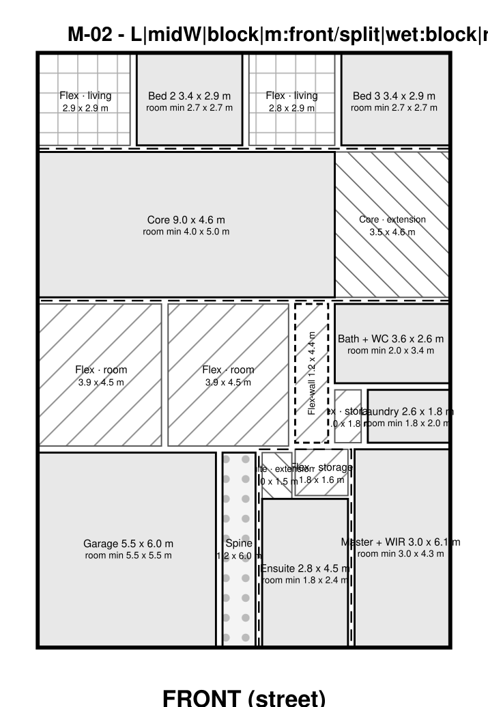
option 5 (rank 35 of 1788)score 21.96 · Flex share 10% · carved: Theatre, Guest bed, Activity, Study · circulation 8% · Core 22% · bedroom spread 6.2 m · wet near bed no · laundry near yes · spine 6.0 m · extensions 0.0 m² · flex m²: room 0.0 · circulation 6.5 · storage 17.0 · sliver 0.0 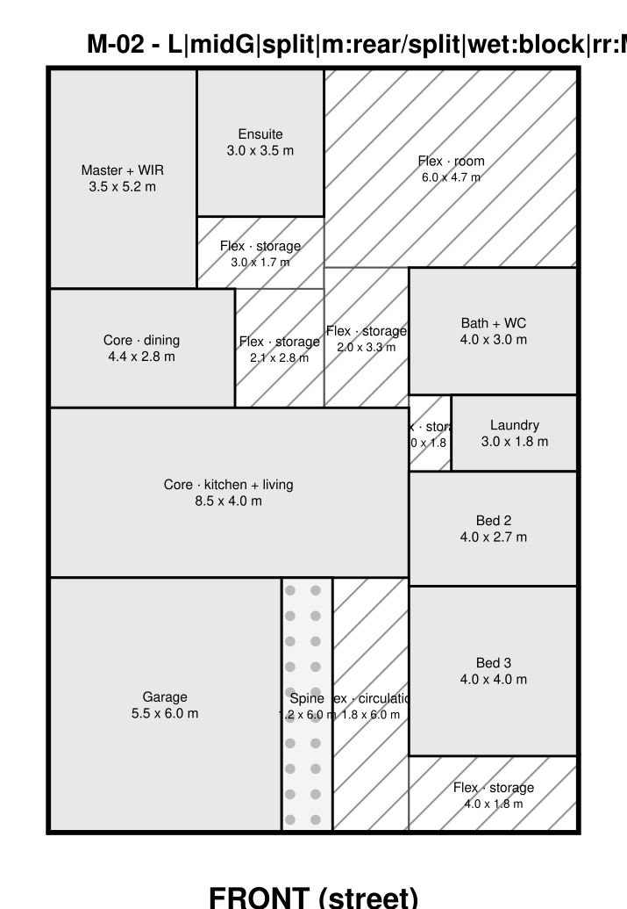
option 6 (rank 75 of 1788)score 27.91 · Flex share 17% · carved: Theatre, Study · circulation 13% · Core 21% · bedroom spread 4.3 m · wet near bed yes · laundry near yes · spine 6.0 m · extensions 0.0 m² · flex m²: room 0.0 · circulation 22.1 · storage 16.4 · sliver 0.0 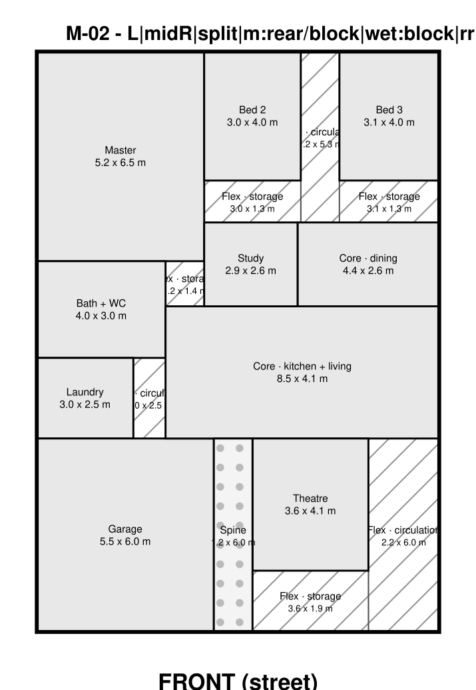
M-03 - 9.5 x 26.0 narrow, 4 bed, double garage 9500 x 26000 mm, 4 bed, double garage
valid 606/5504 generated · 482 distinct · 241 mirror images hidden
option 1 (rank 1 of 482)score 7.36 · Flex share 16% · carved: Guest bed, Activity, Study · circulation 7% · Core 20% · bedroom spread 11.2 m · wet near bed yes · laundry near yes · spine 6.0 m · extensions 0.0 m² · flex m²: room 20.3 · circulation 11.0 · storage 8.2 · sliver 0.0 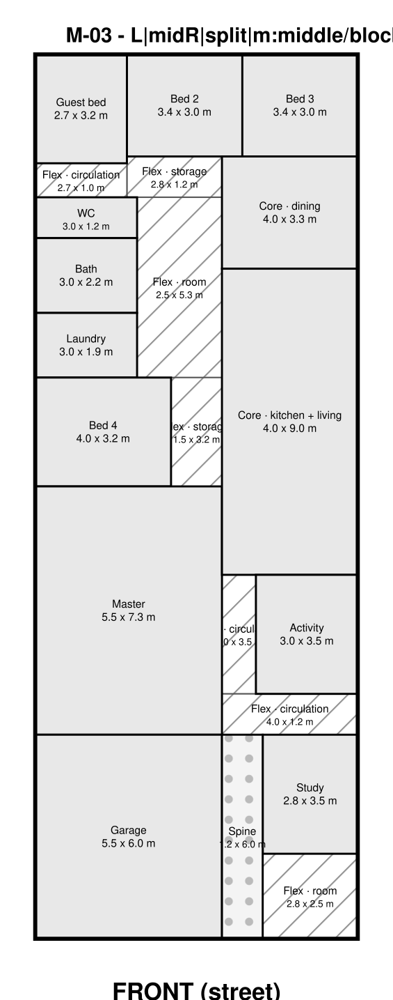
option 2 (rank 19 of 482)score 11.52 · Flex share 16% · carved: Theatre, Guest bed, Study · circulation 12% · Core 23% · bedroom spread 8.0 m · wet near bed yes · laundry near yes · spine 6.0 m · extensions 0.0 m² · flex m²: room 11.2 · circulation 23.2 · storage 4.1 · sliver 0.0 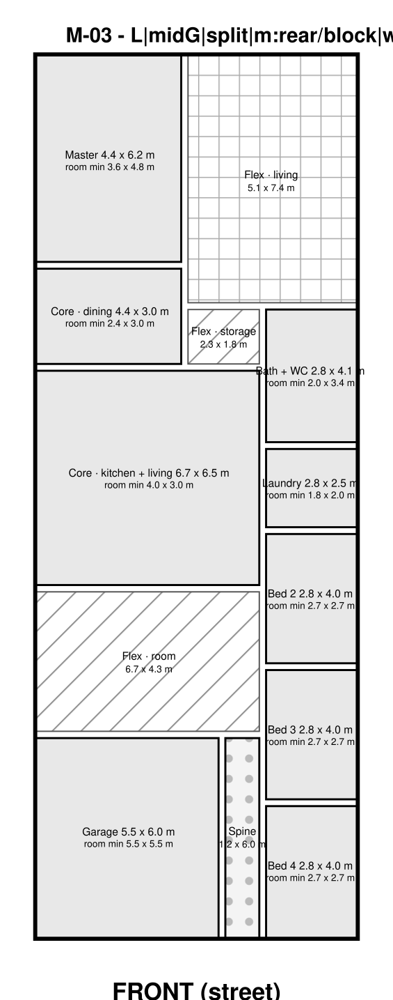
option 3 (rank 27 of 482)score 11.88 · Flex share 11% · carved: Theatre, Guest bed, Activity, Study · circulation 3% · Core 23% · bedroom spread 7.4 m · wet near bed yes · laundry near yes · spine 6.0 m · extensions 0.0 m² · flex m²: room 21.5 · circulation 0.0 · storage 5.7 · sliver 0.0 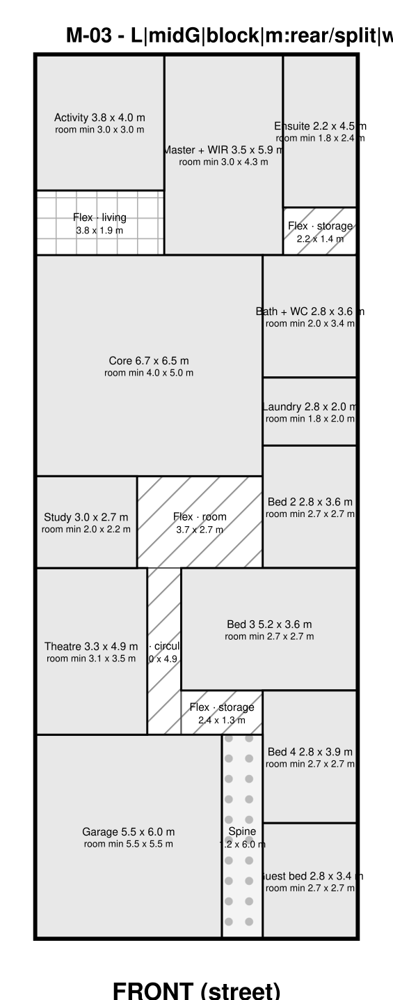
option 4 (rank 87 of 482)score 15.93 · Flex share 18% · carved: Theatre, Guest bed, Activity, Study · circulation 3% · Core 18% · bedroom spread 6.8 m · wet near bed yes · laundry near yes · spine 6.0 m · extensions 4.7 m² · flex m²: room 38.5 · circulation 0.0 · storage 6.3 · sliver 0.0 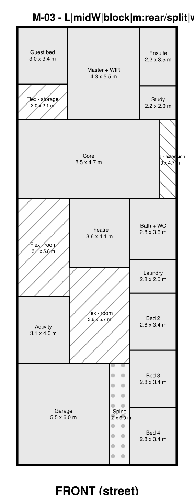
option 5 (rank 95 of 482)score 17.49 · Flex share 16% · carved: Theatre, Guest bed, Activity, Study · circulation 7% · Core 20% · bedroom spread 6.4 m · wet near bed yes · laundry near yes · spine 6.0 m · extensions 0.0 m² · flex m²: room 15.8 · circulation 9.2 · storage 14.5 · sliver 0.0 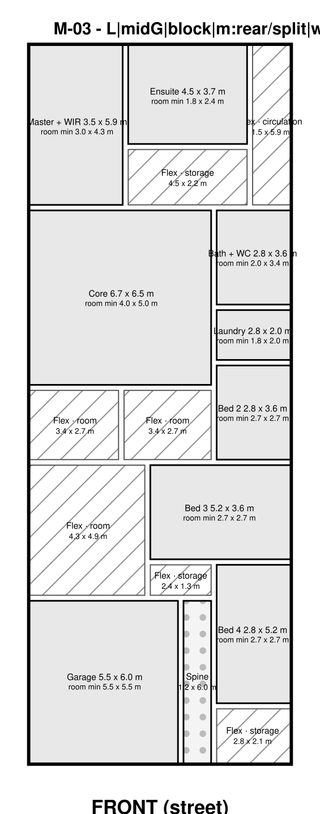
option 6 (rank 103 of 482)score 17.72 · Flex share 9% · carved: Theatre, Guest bed, Activity, Study · circulation 8% · Core 20% · bedroom spread 6.1 m · wet near bed yes · laundry near yes · spine 6.0 m · extensions 0.0 m² · flex m²: room 0.0 · circulation 11.6 · storage 11.2 · sliver 0.0 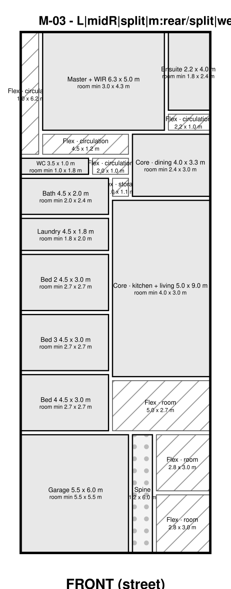
M-04 - 14.0 x 17.0 wide, 4 bed, double garage 14000 x 17000 mm, 4 bed, double garage
valid 1222/5504 generated · 918 distinct · 459 mirror images hidden
option 1 (rank 1 of 918)score 6.9 · Flex share 8% · carved: Guest bed, Activity, Study · circulation 6% · Core 24% · bedroom spread 8.9 m · wet near bed yes · laundry near yes · spine 6.0 m · extensions 0.0 m² · flex m²: room 7.5 · circulation 0.0 · storage 12.2 · sliver 0.0 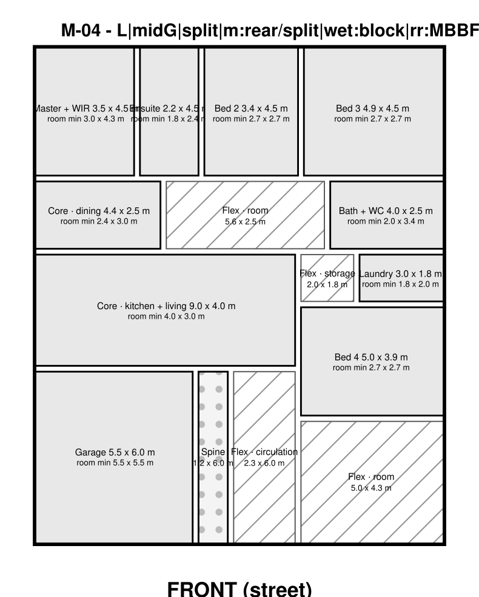
option 2 (rank 9 of 918)score 15.13 · Flex share 13% · carved: Activity, Study · circulation 7% · Core 30% · bedroom spread 5.8 m · wet near bed yes · laundry near yes · spine 6.0 m · extensions 25.5 m² · flex m²: room 13.8 · circulation 10.3 · storage 5.8 · sliver 0.0 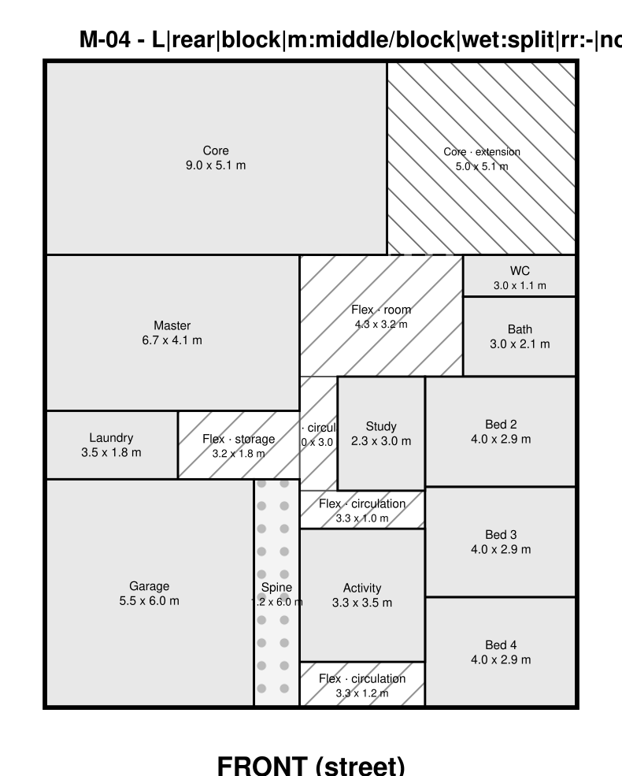
option 3 (rank 34 of 918)score 22.98 · Flex share 17% · carved: Theatre, Guest bed, Study · circulation 5% · Core 24% · bedroom spread 13.0 m · wet near bed yes · laundry near yes · spine 6.0 m · extensions 20.0 m² · flex m²: room 32.7 · circulation 5.7 · storage 1.8 · sliver 0.0 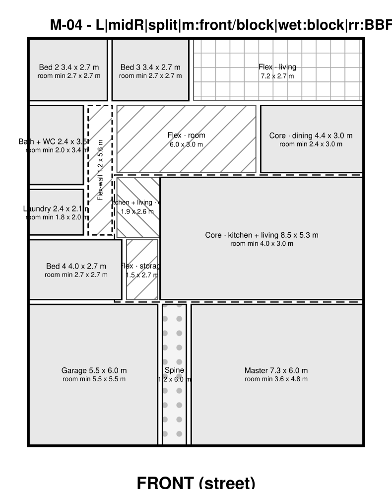
option 4 (rank 40 of 918)score 23.16 · Flex share 9% · carved: Guest bed, Activity, Study · circulation 6% · Core 24% · bedroom spread 13.2 m · wet near bed yes · laundry near yes · spine 6.0 m · extensions 0.0 m² · flex m²: room 11.3 · circulation 0.0 · storage 9.0 · sliver 0.0 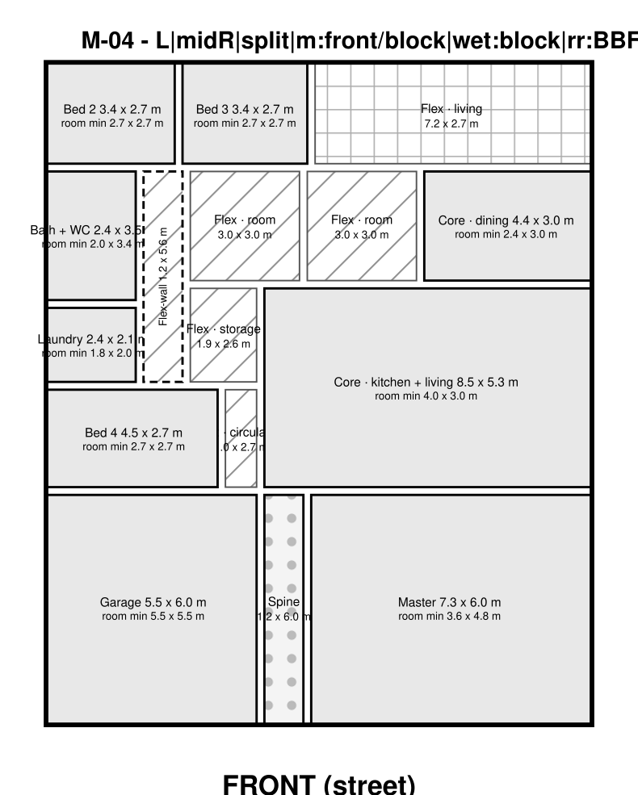
option 5 (rank 44 of 918)score 23.41 · Flex share 13% · carved: Theatre, Guest bed, Study · circulation 11% · Core 25% · bedroom spread 13.1 m · wet near bed yes · laundry near yes · spine 6.0 m · extensions 0.0 m² · flex m²: room 0.0 · circulation 18.2 · storage 12.6 · sliver 0.0 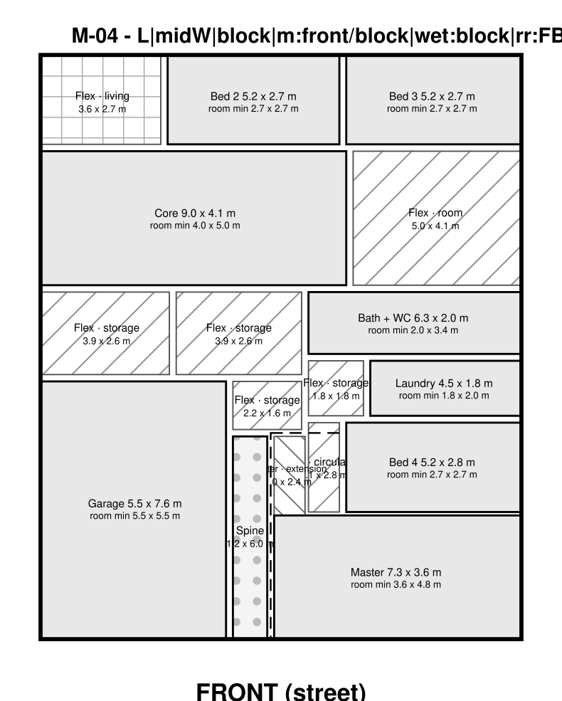
option 6 (rank 64 of 918)score 31 · Flex share 17% · carved: Theatre, Guest bed, Study · circulation 7% · Core 17% · bedroom spread 14.1 m · wet near bed yes · laundry near yes · spine 6.0 m · extensions 0.0 m² · flex m²: room 23.2 · circulation 9.1 · storage 8.4 · sliver 0.0 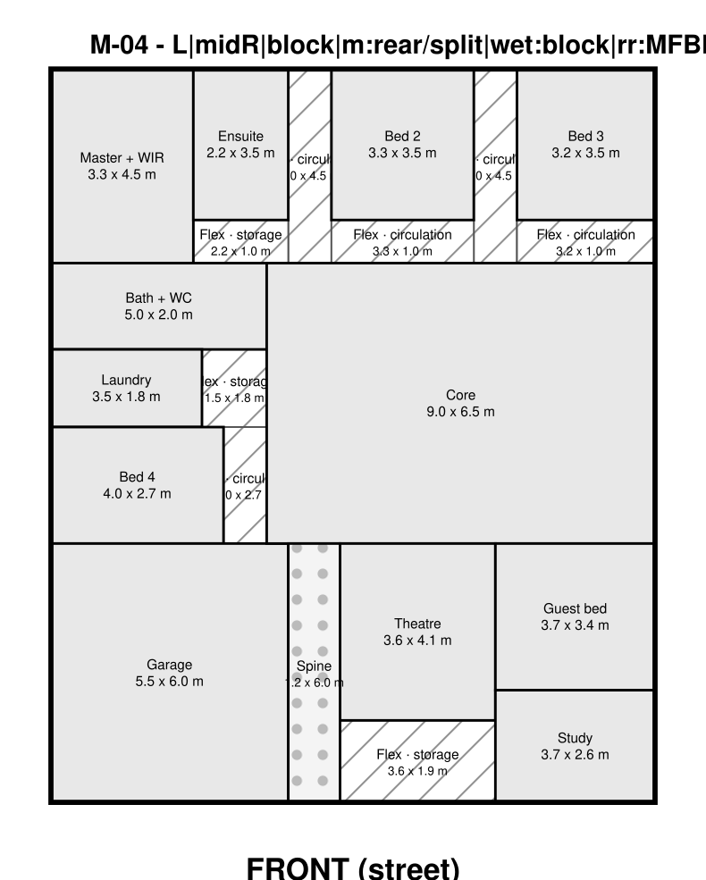
M-05 - 12.5 x 22.0, 4 bed, double garage 12500 x 22000 mm, 4 bed, double garage
valid 2564/5504 generated · 2106 distinct · 1053 mirror images hidden
option 1 (rank 1 of 2106)score 7.34 · Flex share 12% · carved: Theatre, Guest bed, Activity, Study · circulation 7% · Core 21% · bedroom spread 9.9 m · wet near bed yes · laundry near yes · spine 6.0 m · extensions 0.0 m² · flex m²: room 25.0 · circulation 3.6 · storage 3.8 · sliver 0.0 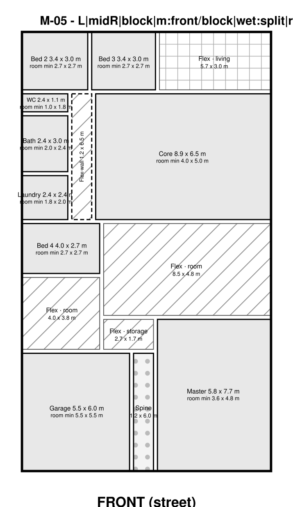
option 2 (rank 13 of 2106)score 8.67 · Flex share 19% · carved: Theatre, Guest bed, Activity, Study · circulation 5% · Core 21% · bedroom spread 8.9 m · wet near bed yes · laundry near yes · spine 6.0 m · extensions 0.0 m² · flex m²: room 37.6 · circulation 0.0 · storage 14.5 · sliver 0.0 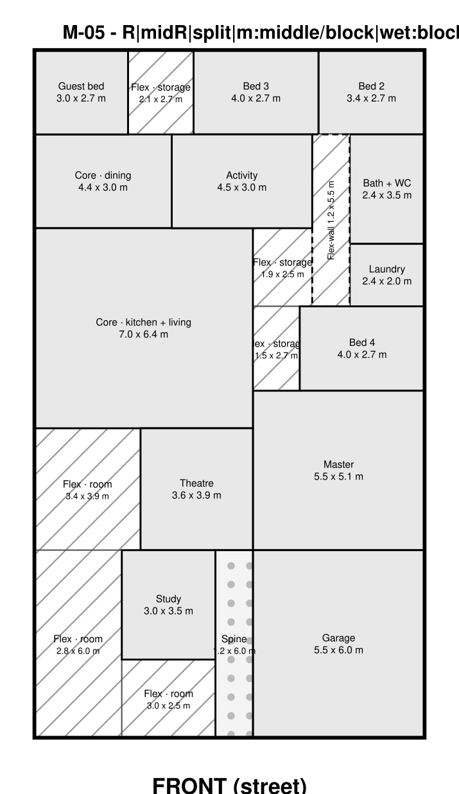
option 3 (rank 15 of 2106)score 8.68 · Flex share 19% · carved: Theatre, Guest bed, Activity, Study · circulation 6% · Core 21% · bedroom spread 11.0 m · wet near bed yes · laundry near yes · spine 6.0 m · extensions 0.0 m² · flex m²: room 27.7 · circulation 8.8 · storage 14.8 · sliver 0.0 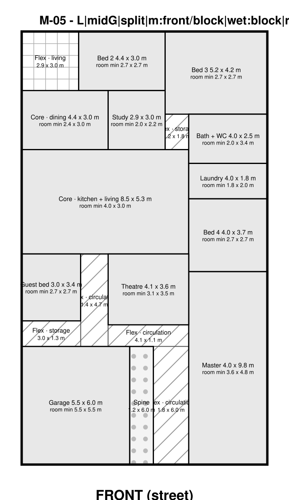
option 4 (rank 23 of 2106)score 9.1 · Flex share 17% · carved: Theatre, Guest bed, Activity, Study · circulation 10% · Core 21% · bedroom spread 11.3 m · wet near bed yes · laundry near yes · spine 6.0 m · extensions 0.0 m² · flex m²: room 20.7 · circulation 19.2 · storage 7.0 · sliver 0.0 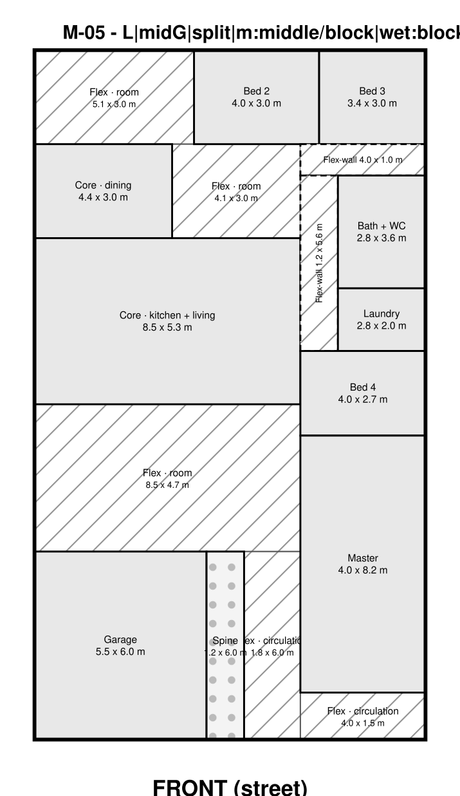
option 5 (rank 27 of 2106)score 9.13 · Flex share 16% · carved: Theatre, Guest bed, Activity, Study · circulation 15% · Core 21% · bedroom spread 10.3 m · wet near bed yes · laundry near yes · spine 6.0 m · extensions 0.0 m² · flex m²: room 20.7 · circulation 22.3 · storage 0.0 · sliver 0.0 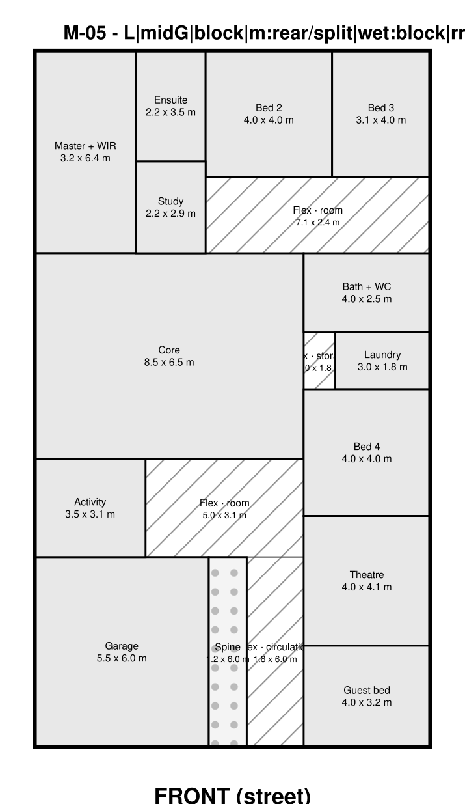
option 6 (rank 47 of 2106)score 9.91 · Flex share 16% · carved: Theatre, Guest bed, Activity, Study · circulation 15% · Core 21% · bedroom spread 10.0 m · wet near bed yes · laundry near yes · spine 6.0 m · extensions 0.0 m² · flex m²: room 20.7 · circulation 24.3 · storage 0.0 · sliver 0.0 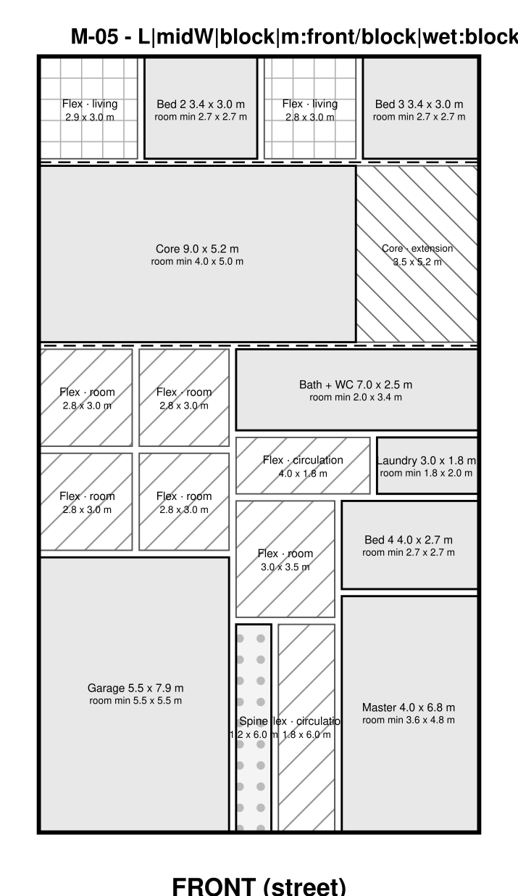